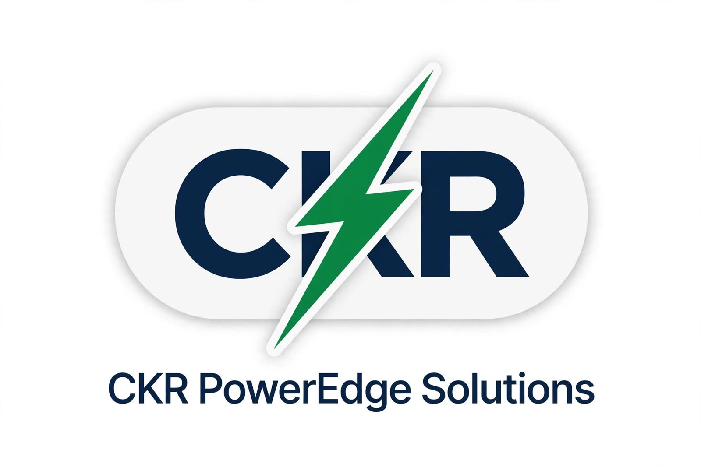

A practical introduction to renewable power procurement for commercial and industrial consumers.
Open-access mechanisms can connect eligible consumers with renewable generators, but thresholds, charges, banking, metering and application processes depend on the state, consumer category and procurement route. The examples below are specifically for Andhra Pradesh and must not be applied as an all-India tariff schedule.
Use current state orders and your consumer category. These are items to check, not charges that apply to every consumer or route. The Andhra Pradesh references on this page are regional examples, not national rates.
Banking rules, settlement periods, permitted adjustments and charges vary across states and can change. Confirm the current state order, contract terms and energy-accounting process before relying on banked units in a financial model.
For other states, consult the relevant SERC, transmission utility, SLDC and DISCOM for current orders and schedules. References checked 6 October 2026; rules and orders may change.